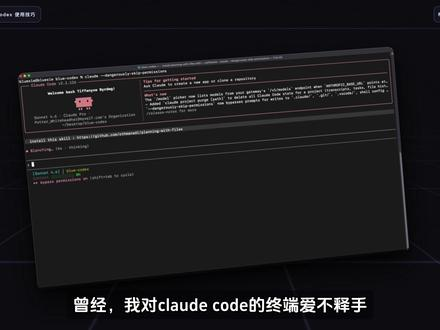

Claude Code Prompt Cache 配置实战
来源：抖音 归档日期：2026-04-25 抓取状态：成功 原文字符：24103｜配图：25 张
摘要速览
Claude Code 默认开启 Prompt Cache，但大多数人不知道失效规则，一个标点的改动就会让缓存全部作废，白白浪费 Token 和响应时间。
核心内容
一、缓存机制原理
| 维度 | 内容 |
|---|---|
| 工作方式 | 前缀匹配缓存：请求前缀与历史完全一致时，复用缓存 KV，跳过 Prefill 计算 |
| 可缓存内容 | CLAUDE.md、项目文件内容（同一会话内） |
| 节省效果 | 视频未给精确数值；行业实测 Token 消耗降低 30%-50%，响应速度显著提升 |
二、缓存失效规则（关键，易踩坑）
| 触发条件 | 影响范围 |
|---|---|
| 修改 CLAUDE.md（哪怕一个标点/空格） | 该模块及后续所有缓存（含历史对话）全部失效 |
| 超时：默认 5 分钟无新请求 | 缓存自动过期 |
最佳实践：
- 确认 CLAUDE.md 稳定后再开始长任务，中途不改
- 长时间离开前先执行
/compact，可延长缓存有效时间（压缩后的摘要作为新前缀重新计时）
三、配置 / 开启方式
- 无需手动开启，Claude Code 默认启用 Prompt Cache
- 不需要在 settings.json 里加任何字段（视频未提及任何开关参数）
- 核心操作只有一个：优化 CLAUDE.md 结构，保持前缀稳定
四、CLAUDE.md 写法建议（影响缓存命中率）
参考 20260424-claude文件夹配置分层体系 卡中的补充：
- 只放"每次都值得带上"的稳定常驻规则（启动命令、架构边界、危险区）
- 控制在 100 行以内
- 动态内容/个人偏好/临时状态一律不放 → 塞进去会导致频繁失效
- 个性偏好放
~/.claude/CLAUDE.md（用户级），不放项目级
五、上下文腐烂阈值
来自同一视频上下文管理章节
- 30%-40% 上下文占比时开始出现性能下降（不是 60%）
- 不要等到 60% 才处理，更不要等"出问题"再清理
- 建议：上下文占比过半（>50%）就执行
/compact
可执行启发
（待补充）
我的想法
（待补充——1. SXL 当前 CLAUDE.md 是否有"把动态状态塞进稳定前缀"的问题？上一张 .claude/ 配置卡已有类似问题意识，可以对照检查。2. 5 分钟超时这个数值，结合 ScheduleWakeup 工具的 300s = 5min 缓存 TTL，两个系统竟然设计成了同一个数值——有没有什么协同空间？）
来源说明：布鲁歇一歇视频 2026-04-23，豆包总结 2026-04-25。原文存档：02-输入/raw/20260425-豆包总结-Claude-Code提效指南-布鲁歇一歇.md
适用 / 不适用场景
- 适用：重度使用 Claude Code 做长任务的场景，CLAUDE.md 内容较多的项目
- 不适用：一次性轻量任务（缓存收益不大）
原文沉淀
目录
读屏标签已关闭


下载抖音精选
2026 © 抖音
[
京公网安备11010802050006号](https://beian.mps.gov.cn/)
[
电子营业执照](https://zzlz.gsxt.gov.cn/businessCheck/verifKey.do)
信息网络传播视听节目许可证 0126733
广播电视节目制作经营许可证 （京）字第11313号
增值电信业务经营许可证 京B2-20170846
网络文化经营许可证 京网文〔2025〕0181-061号
互联网宗教信息服务许可证 京（2025）0000017
药品医疗器械网络信息服务备案 （京）网药械信息备字（2023）第00570号
互联网新闻信息服务许可证 11220230001

违法和不良信息举报 400-140-2108 feedback@douyin.com
算法推荐专项举报 sfjubao@bytedance.com
体育饭圈专项举报 tyfq@bytedance.com
planning with files
充钻石
壁纸
通知
**
消息
投稿
未登录
登录后即可观看喜欢、收藏作品
我的喜欢
我的收藏
观看历史
稍后再看
我的作品
我的预约
我的订单
暂停
00:06 / 10:39 直播
章节要点1：引言
登录后可发布弹幕
发送
00:00
进入全屏H
网页全屏Y
0
截图
小窗模式U
字幕
- 不开启
稍后再看L
倍速
登录后即可切换倍速立即登录
超清 4K登录即享
超清 2K登录即享
高清 1080P登录即享
高清 720P
智能
智能
清屏
清屏J
连播
自动连播K
5万
678
7万
4687
听抖音
**
重播

3s 后播放
第5集 | Codex完整使用拆解，我的新生产力闭环。 分享近期高强度使用codex的技巧，希望对你有所帮助。#AI #codex #gpt #gemini #claude
3s 后播放下一个视频
3s 后循环播放当前视频
点击按住可拖动视频
章节要点
Claude Code的使用技巧，包括上下文管理、Prompt缓存、Skill和插件的使用。通过这些技巧，可以提高Claude Code的使用效率，减少token消耗，更好地完成任务。
00:03
引言
00:34
上下文管理
03:26
Prompt缓存
04:43
Skill
09:24
插件
10:19
结语
内容由AI生成
第4集 | Claude Code提效指南！实战经验分享！ 包含我在使用cc过程中的小技巧（上下文管理、skill、插件等）希望能对大家有所帮助！#AI #大模型 #gpt #gemini #claude
5万
678
7万
4687
举报
发布时间：2026-04-23 17:30
布鲁404
粉丝4.5万获赞24.6万
合集 · AI生产力
- ［图：合集 · AI生产力第4集］
10:39
播放中
第4集 | Claude Code提效指南！实战经验分享！ 包含我在使用cc过程中的小技巧（上下文管理、skill、插件等）希望能对大家有所帮助！#AI #大模型 #gpt #gemini #claude
5万
- ［图：合集 · AI生产力第5集］
06:43
播放中
第5集 | Codex完整使用拆解，我的新生产力闭环。 分享近期高强度使用codex的技巧，希望对你有所帮助。#AI #codex #gpt #gemini #claude
5万
- ［图：合集 · AI生产力第6集］
04:21
播放中
第6集 | Claude Code新功能Agents View、Goal 本期介绍了claude code新出的agents view和goal功能，不得不说cc的更新速度之快！#AI #大模型 #gpt #claude #AI新星计划
3200
- ［图：合集 · AI生产力第7集］
06:03
播放中
第7集 | 别再把 AI 当搜索引擎了,教你搭一套自己的AI信息库。 #AI #大模型 #gpt #xcrawl #AI新星计划
519
- ［图：合集 · AI生产力第8集］
04:28
播放中
第8集 | 我是如何用 AI 辅助做动画视频的？完整工作流分享。 #AI #大模型 #gpt #claude #AI新星计划
890
- ［图：合集 · AI生产力第9集］
04:00
播放中
第9集 | AI 代码越写越快，为什么团队反而更累了？ #AI #大模型 #gpt #gemini #AI新星计划
261
推荐视频
- ［图：一个视频搞懂WorkBuddy完整工作流+实战技巧！03.【WorkBuddy入门】给workbuddy的第一个任务及任务管理！#WorkBuddy#工作流#AI#AI工作流#AI办公］
14:39
播放中
一个视频搞懂WorkBuddy完整工作流+实战技巧！03.【WorkBuddy入门】给workbuddy的第一个任务及任务管理！#WorkBuddy#工作流#AI#AI工作流#AI办公
228凌晨七点半1mo
- ［图：WorkBuddy保姆级教学办公三件套。 #WorkBuddy #AI办公 #AI工具 #人工智能 #AI教程］
11:37
播放中
WorkBuddy保姆级教学办公三件套。 #WorkBuddy #AI办公 #AI工具 #人工智能 #AI教程
818张瑞麟AI
- ［图：Deepseek+Solidworks,自动绘制复杂机械结构 #Deepseek #solidworks #建模 #codex #skills］
02:02
播放中
Deepseek+Solidworks,自动绘制复杂机械结构 #Deepseek #solidworks #建模 #codex #skills
6万极简AI（3%）
- ［图：用Claude Code一定要装这SKill！ 这是一个可以让你的Claude Code，变得更好用的开源项目，它的名字叫做andrej-karpathy-skills，短短一个月就涨到了10万 Star，但离谱的是，这个项目里只有一个65行markdown文档，为什么这么短的内容却有这么大的影响力呢？#vibecoding #claudecode #claude #github #开源项目］
01:01
播放中
用Claude Code一定要装这SKill！ 这是一个可以让你的Claude Code，变得更好用的开源项目，它的名字叫做andrej-karpathy-skills，短短一个月就涨到了10万 Star，但离谱的是，这个项目里只有一个65行markdown文档，为什么这么短的内容却有这么大的影响力呢？#vibecoding #claudecode #claude #github #开源项目
4万我是阿众
- ［图：认识WorkBuddy-保姆级入门到精通教程 #AI智能体 #Agent #Workbuddy #AI办公］
06:01
播放中
认识WorkBuddy-保姆级入门到精通教程 #AI智能体 #Agent #Workbuddy #AI办公
532晓墨AIGC
- ［图：pandas的介绍与使用 【Python从零开始学】#Python#编程#Python编程#零基础学Python#编程学习］
07:02
播放中
pandas的介绍与使用 【Python从零开始学】#Python#编程#Python编程#零基础学Python#编程学习
956靠谱的乐一
- ［图：如何快速对齐文字和添加下划线，高手教你10秒搞定！#word#wps #excel#职场#上热门］
00:40
播放中
如何快速对齐文字和添加下划线，高手教你10秒搞定！#word#wps #excel#职场#上热门
4万零基础学办公
- 
00:33
播放中
WorkBuddy别花钱学了，这网站全免费 实战教程，从安装到多Agent工作流，全程免费学#WorkBuddy#AI工具测评#AI办公提效#AI员工#ai免费教程
443听雨聊AI
- 
06:06
播放中
DeepSeek V4-Flash正式版API接入Codex DeepSeek V4 正式版终于来了，代码能力大幅升级，这期视频就手把手教你，如何把满血版 DeepSeek V4 接入 Codex 工具，让你在编程环境里直接拥有一个超强 AI 助手。教程全程实操，零基础也能看懂：从获取 DeepSeek API Key，到在 Codex 里完成配置。如果视频对你有帮助，别忘了一键三连加关注，这个《上位机玩家专属：零基础AI工具实战指南》合集还会持续更新更多 AI + 上位机的实用技巧，带你真正把 AI 用到刀刃上。#OpenAI #ChatGPT #DeepSeek #Agent #AI
4800白话上位机
- ［图：WorkBuddy 零基础教学： 从安装到搭出你的账号运营数据工作台。 #workbuddy #Agent #AI #LLM #教程］
10:42
播放中
WorkBuddy 零基础教学： 从安装到搭出你的账号运营数据工作台。 #workbuddy #Agent #AI #LLM #教程
355老傅1024
全部评论
请先登录后发表评论
大家都在搜：claude
不要口嗨
...
我这边实测过，确实能跑起来
3月前·湖南
0
分享
回复
Hesher
...
这些skill和mcp全装上，然后你就会发现token消耗速度马上就上去了
4月前·北京
0
分享
回复
cliclicli
...
如何和claude沟通的时候要让他以适应生产环境的角度进行思考和实现呢？有时候感觉虽然能实现,但是是poc或者demo的样子。
3周前·辽宁
0
分享
回复
莽小五
...
最近更新的各个公司的ai都在故意延长思维链，目的是消耗token，并且把会话的上下文缩短了，trae最早的时候上下文很短，后来是150次会话，现在是50次会话。vscode最近的版本也短了不少，并且还有恶意代码，就是简单任务故意捣乱，然后再修复自己捣的乱，似乎目的也是浪费token。
2月前·北京
1
分享
回复
小笼包的AI 实操世界
...
上下文管理这块我挺有感的。Claude Code 不是越聊越准，很多时候是项目背景没固定住。我会先写一张小卡片：目录、命令、验收标准。你现在最卡的是上下文丢，还是插件不会配？
2月前·四川
0
分享
回复
登录后即可参与互动讨论
布鲁404
粉丝4.5万获赞24.6万
合集 · AI生产力
- ［图：合集 · AI生产力第4集］
10:39
播放中
第4集 | Claude Code提效指南！实战经验分享！ 包含我在使用cc过程中的小技巧（上下文管理、skill、插件等）希望能对大家有所帮助！#AI #大模型 #gpt #gemini #claude
5万
- ［图：合集 · AI生产力第5集］
06:43
播放中
第5集 | Codex完整使用拆解，我的新生产力闭环。 分享近期高强度使用codex的技巧，希望对你有所帮助。#AI #codex #gpt #gemini #claude
5万
- ［图：合集 · AI生产力第6集］
04:21
播放中
第6集 | Claude Code新功能Agents View、Goal 本期介绍了claude code新出的agents view和goal功能，不得不说cc的更新速度之快！#AI #大模型 #gpt #claude #AI新星计划
3200
- ［图：合集 · AI生产力第7集］
06:03
播放中
第7集 | 别再把 AI 当搜索引擎了,教你搭一套自己的AI信息库。 #AI #大模型 #gpt #xcrawl #AI新星计划
519
- ［图：合集 · AI生产力第8集］
04:28
播放中
第8集 | 我是如何用 AI 辅助做动画视频的？完整工作流分享。 #AI #大模型 #gpt #claude #AI新星计划
890
- ［图：合集 · AI生产力第9集］
04:00
播放中
第9集 | AI 代码越写越快，为什么团队反而更累了？ #AI #大模型 #gpt #gemini #AI新星计划
261
推荐视频
- ［图：一个视频搞懂WorkBuddy完整工作流+实战技巧！03.【WorkBuddy入门】给workbuddy的第一个任务及任务管理！#WorkBuddy#工作流#AI#AI工作流#AI办公］
14:39
播放中
一个视频搞懂WorkBuddy完整工作流+实战技巧！03.【WorkBuddy入门】给workbuddy的第一个任务及任务管理！#WorkBuddy#工作流#AI#AI工作流#AI办公
228凌晨七点半1mo
- ［图：WorkBuddy保姆级教学办公三件套。 #WorkBuddy #AI办公 #AI工具 #人工智能 #AI教程］
11:37
播放中
WorkBuddy保姆级教学办公三件套。 #WorkBuddy #AI办公 #AI工具 #人工智能 #AI教程
818张瑞麟AI
- ［图：Deepseek+Solidworks,自动绘制复杂机械结构 #Deepseek #solidworks #建模 #codex #skills］
02:02
播放中
Deepseek+Solidworks,自动绘制复杂机械结构 #Deepseek #solidworks #建模 #codex #skills
6万极简AI（3%）
- ［图：用Claude Code一定要装这SKill！ 这是一个可以让你的Claude Code，变得更好用的开源项目，它的名字叫做andrej-karpathy-skills，短短一个月就涨到了10万 Star，但离谱的是，这个项目里只有一个65行markdown文档，为什么这么短的内容却有这么大的影响力呢？#vibecoding #claudecode #claude #github #开源项目］
01:01
播放中
用Claude Code一定要装这SKill！ 这是一个可以让你的Claude Code，变得更好用的开源项目，它的名字叫做andrej-karpathy-skills，短短一个月就涨到了10万 Star，但离谱的是，这个项目里只有一个65行markdown文档，为什么这么短的内容却有这么大的影响力呢？#vibecoding #claudecode #claude #github #开源项目
4万我是阿众
- ［图：认识WorkBuddy-保姆级入门到精通教程 #AI智能体 #Agent #Workbuddy #AI办公］
06:01
播放中
认识WorkBuddy-保姆级入门到精通教程 #AI智能体 #Agent #Workbuddy #AI办公
532晓墨AIGC
- ［图：pandas的介绍与使用 【Python从零开始学】#Python#编程#Python编程#零基础学Python#编程学习］
07:02
播放中
pandas的介绍与使用 【Python从零开始学】#Python#编程#Python编程#零基础学Python#编程学习
956靠谱的乐一
- ［图：如何快速对齐文字和添加下划线，高手教你10秒搞定！#word#wps #excel#职场#上热门］
00:40
播放中
如何快速对齐文字和添加下划线，高手教你10秒搞定！#word#wps #excel#职场#上热门
4万零基础学办公
- 
00:33
播放中
WorkBuddy别花钱学了，这网站全免费 实战教程，从安装到多Agent工作流，全程免费学
#WorkBuddy#AI工具测评#AI办公提效#AI员工#ai免费教程
443听雨聊AI
- 
06:06
播放中
DeepSeek V4-Flash正式版API接入Codex DeepSeek V4 正式版终于来了，代码能力大幅升级，这期视频就手把手教你，如何把满血版 DeepSeek V4 接入 Codex 工具，让你在编程环境里直接拥有一个超强 AI 助手。 教程全程实操，零基础也能看懂：从获取 DeepSeek API Key，到在 Codex 里完成配置。 如果视频对你有帮助，别忘了一键三连加关注，这个《上位机玩家专属：零基础AI工具实战指南》合集还会持续更新更多 AI + 上位机的实用技巧，带你真正把 AI 用到刀刃上。 #OpenAI #ChatGPT #DeepSeek #Agent #AI
4800白话上位机
- ［图：WorkBuddy 零基础教学： 从安装到搭出你的账号运营数据工作台。 #workbuddy #Agent #AI #LLM #教程］
10:42
播放中
WorkBuddy 零基础教学： 从安装到搭出你的账号运营数据工作台。 #workbuddy #Agent #AI #LLM #教程
355老傅1024
｜ 违法和不良信息举报：400-140-2108 feedback@douyin.com ｜ 算法推荐专项举报：sfjubao@bytedance.com | 体育饭圈专项举报：tyfq@bytedance.com
｜ 信息网络传播视听节目许可证 0126733
｜ 广播电视节目制作经营许可证 （京）字第11313号
｜ 增值电信业务经营许可证 京B2-20170846
｜ 网络文化经营许可证 京网文〔2025〕0181-061号 ｜
｜ 互联网宗教信息服务许可证 京（2025）0000017 ｜
热门：抖音游戏抖音美食新金珠宝旗舰店高中英语语法填空｜名词性从句+状语从句全套考点笔记 搞定从句易混点，语法填空少丢分 ▪️整理名词性从句、让步状语从句、时间状语从句高频考点，是语法填空的核心板块。 ▪️辨析that/what、if/whether、wh‑ever、though/although、as/while等易混连词，搭配例句拆解用法区别。 ▪️包含特殊句式：as‑though倒装、no matter与‑ever区分、no sooner…than等考试常考结构。 ▪️每个考点后设置即时训练板块，学完知识点可以自我检测，适合高中生语法吴忠秦宁高考喜报2023安徽高考屏蔽生界面全国甲卷作文书3亿北斗工程现“脆皮底座” 官方通报#研究生科研绘图教程| PS快速测量TEM晶格间距及SEM的粒径大小 #博士 #科研绘图新手玩抖音，不要一上来就直接发作品。有些方法和技巧可以学学#抖音用法教程 #抖音基础知识 #短视频创业 #干货分享 #自媒体#秦腔抖起来志愿填报补录##初三考不上高中怎么办 #升学规划 #考不上高中上什么学校最合适 #一切为了孩子 #家长必读热水器减压阀如何安装？如何调试？视频如下:一期讲完 文玩核桃从打底到去返碱盘玩全过程#文玩爱好者 #干货分享 #文玩核桃 #文玩手串
进入全屏
直播加载中
##
很抱歉给你带来不好的感受
和视频不一致
有错别字
内容太少
内容太多
写得太模糊
语句不通畅
对我没帮助
本章节未提及
0/200
- 创作者中心
归属：[[02-输入/按主题/工具与技术/_index|工具与技术]]